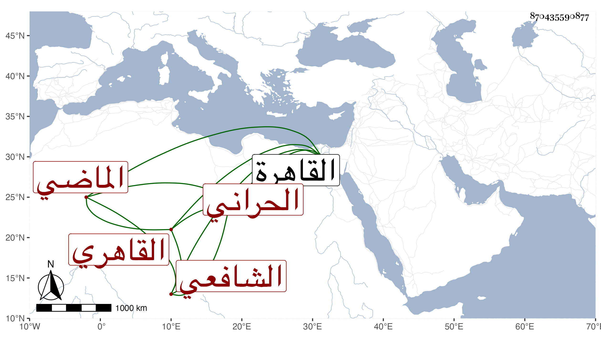

0902Sakhawi.DawLamic.ITO20230111-ara1.EIS1600.870435590877
Biography ID: 870435590877
221
محمد بن محمد بن خليل بن إبراهيم بن علي بن سالم التقي أبو الفتح بن الشمس الحراني الاصل القاهري الشافعي الماضي أبوه ويعرف بابن المنمنم بنونين وثلاث ميمات . ولد سنة إحدى وتسعين وسبعمائة بالقاهرة ونشأ بها فحفظ القرآن وكتبا واشتغل وسمع علي التنوخي والتقي الدجوي والسعد القمني والمطرز والغماري والابناسي والحلاوي والسويداوي والشهاب الجوهري والعراقي والهيثمي وابن الناصح والفرسيسي والشرف بن الكويك والشمس الاذرعي الحنفي وآخرين وحدث باليسير أخذ عنه الفضلاء ولقيته غير مرة فشافهني وسمعت الثناء عليه من العلاء القلقشندي وكان نقيب الشافعية بالشيخونية . مات في جمادى الاولى سنة خمس وخمسين رحمه الله .
